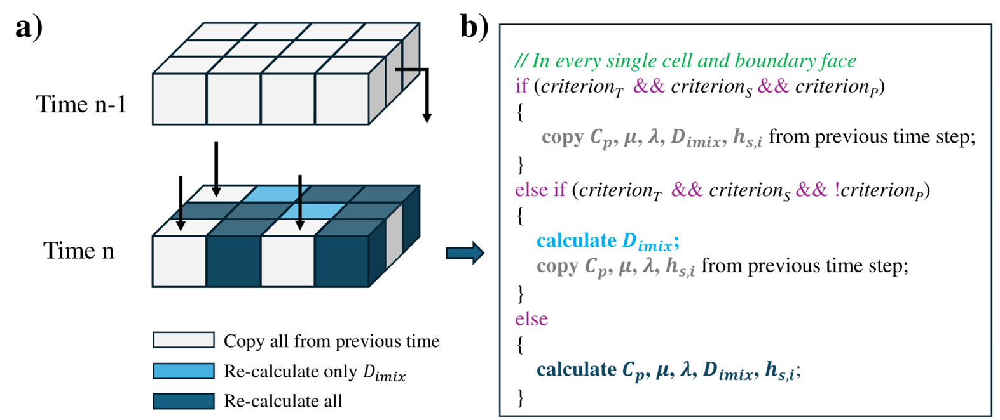

Time-correlated thermophysical property evaluation for accelerating detailed transport model (DTM) simulations in OpenFOAM.
Existing OpenFOAM reacting-flow solvers recompute all thermophysical properties in every computational cell at every time step during the PIMPLE procedure. While the cost is negligible for simplified transport models, it becomes prohibitively expensive for detailed transport models (DTM) due to the complexity of transport-property evaluations and the deeply nested thermophysical model structure in OpenFOAM.
The coTHERM (time-correlated thermophysical property evaluation) method is developed to reduce the computational cost of detailed transport model (DTM) simulations in OpenFOAM. Instead of recomputing all thermophysical properties in every cell at every time step, coTHERM exploits the temporal correlation of thermodynamic states and species concentrations in transient combustion simulations, where variations between successive time steps are often very small.

Schematic of the coTHERM evaluation procedure.
The method evaluates residuals of temperature, pressure, and selected species mass fractions between consecutive time steps and compares them against user-defined thresholds. If the variations are sufficiently small, previously computed thermophysical properties are reused without reevaluation; otherwise, only the necessary properties are updated. This adaptive strategy significantly reduces the cost of transport-property evaluations while maintaining numerical accuracy and robustness in both serial and parallel reactive-flow simulations.